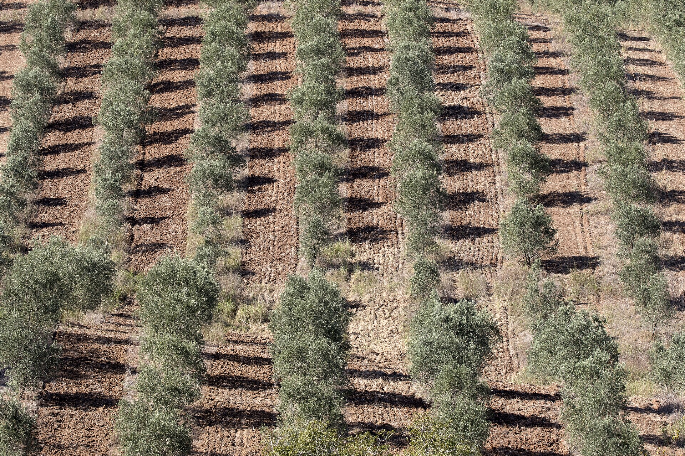

If the label is going to say American, the oil has to come from somewhere real. Almost all of it comes from one state — and there isn't much to go around. Here's who grows it, who will sell it to you, and how bulk oil actually moves.
Where American olive oil is grown
California, overwhelmingly. The state produces on the order of 95% of US olive oil and holds most of the country's olive acreage; in 2023 California processed well over 1.9 million gallons of olive oil 1. Everywhere else is a rounding error by comparison — Georgia has an emerging industry, an Arizona mill has medaled at the New York competition, and southern Oregon has a small craft scene, but together they are a tiny share of output 2.
The industry also changed character recently. Before the mid-2000s about 90% of California's olives went into cans; by 2022 more than three-quarters were crushed for oil instead — a deliberate shift toward the higher-value product 3.

Modern oil orchards are planted in tight, machine-harvestable rows. Roughly 40,000 US acres are planted specifically for oil — nearly all in California's Central Valley and coastal ranges. Photo: Wikimedia Commons, CC BY-SA.
How little there is — the number that governs your plan
The United States consumes something like 90 million gallons of olive oil a year, and imports supply the vast majority of it. By USDA's Economic Research Service, imports account for more than 98% of US consumption — meaning domestic production is under 2% of what Americans actually use 4. (The American Olive Oil Producers Association frames domestic output nearer 5% of consumption; the honest range is roughly 2–5%, with USDA's figure the more conservative and recent 5.)
The reality check
Genuinely US-grown oil is scarce and largely spoken for — much of the best California oil is already committed to the growers' own brands. A "100% American" promise is possible but puts you in a small, competitive pool. Plan volumes against a fixed annual harvest, not an open tap.
Who will actually sell you oil
Two kinds of supplier matter to a startup: the marquee producers (useful to know, harder to buy from in small quantities) and the bulk / private-label mills that court growing brands.
The big names
California Olive Ranch (COR) — America's top-selling domestic EVOO; runs a Grower Private Label program and sells bulk/foodservice formats like 2 L bag-in-box 6. Now owned by Cobram — see below.
Cobram Estate / Boundary Bend — Australian-owned, milling in Woodland, CA since 2014; completed its acquisition of COR in March 2026, making it by far the largest US producer 7. Consolidation worth noting: the two biggest US brands are now one company.
Corto Olive (Lodi) — foodservice-focused, sells 10 L / 20 L "FlavorLock" boxes through distributors 8.
Séka Hills — estate oil from the Yocha Dehe Wintun Nation in the Capay Valley, with a wholesale program and a strong provenance story 9.
Don't assume
Premium estates like Bariani and McEvoy Ranch are well known, but we found no published bulk or private-label program for either — don't assume they'll sell you tanker oil without asking first.
The bulk & private-label mills — your likeliest partners
These are the suppliers that explicitly want small and growing brands:
Supplier
What they offer
Formats
Desert Milling (Imperial Valley, CA)
California EVOO milled in-house, no brokers; private-label + co-pack; advertises "flexible minimums… for growing brands"
250 ml bottles → 5 L bag-in-box → bulk totes; ships unlabeled or fully labeled
Sutter Buttes Olive Oil Co.
Private-label program, bulk & foodservice
2.5, 5, and 55 gallon
Wild Groves
Wholesale bulk EVOO
2.5 gal jugs, 55-gal drums, 265/330-gal totes
Sonoma Farm
California EVOO incl. organic
55-gallon drums (208 L)
PressPack Olive Industries
Bulk + private labeling/bottling
55-gal & 200 L drums, 1,000 L IBC totes
Centra Foods
Bulk EVOO, custom pricing for manufacturers
55-gal drums, 275-gal totes
Suppliers and programs per each company's site, accessed 2026-07-23 10. To vet a California producer's legitimacy, the California Olive Oil Council (COOC) certification seal and member directory are a good filter 11.
How bulk oil actually moves
Bulk olive oil steps up through a familiar ladder of container sizes 12:
2.5–5 gallon jugs — tiny lots, tasting and trial volumes.
10 L / 20 L bag-in-box — protects freshness by keeping air out as you draw it down.
55-gallon drums (≈208 L) — a common practical minimum for "real" bulk.
265–330 gallon IBC totes (≈1,000 L) — for steady production.
Flexitanks — a single one holds up to ~21,000 kg: a full shipping container of oil, far beyond a startup's needs.
From there, two paths:
Buy bulk and bottle it yourself
Drums or totes from a mill/broker, filled and labeled in your own licensed facility. More control, more overhead — see Bottling & Labeling.
Use a co-packer / private-label program
The mill fills, labels, and case-packs under your brand. Usually the lowest-overhead route for a mom-and-pop — but you remain the responsible party for FDA registration and label compliance.
Expect to ask
Minimum order quantities are almost never published — every supplier wants a direct quote. That's the subject of the next chapter.
The 100%-American catch, stated plainly
Supply is structurally tiny and much of the best is pre-committed to producers' own labels 4.
Consolidation just tightened it — the Cobram–COR merger concentrates the two largest producers under one owner 7.
Domestic oil costs more than imports (California land, water, and labor) — though the 2023–24 import price spike temporarily narrowed the gap 4. See Prices & Quotes.
One harvest a year (October–December) means you plan volume around crop timing and lock in against a fixed pool; freshness is best right after the crush 1.
All links accessed 2026-07-23. Supplier programs, minimums, and prices change — confirm directly.
Olive Oil Times / UC ANR — California production share & volumes (Cautious Optimism as Olive Harvest Gets Underway in California; California olive market report). oliveoiltimes.com · accessed 2026-07-23
FoodPrint — Americans love olive oil. Why doesn't the U.S. produce more of it?foodprint.org · accessed 2026-07-23
USDA Economic Research Service — California's olive processing industry shifts from canning to crushing. ers.usda.gov · accessed 2026-07-23
USDA Economic Research Service — Oil Crops Outlook (US output ~12k t; imports >98% of consumption). ers.usda.gov (PDF) · accessed 2026-07-23
American Olive Oil Producers Association — Olive Oil 101 (~90M gal US consumption; domestic ~5% framing; ~40k oil acres). aoopa.org · accessed 2026-07-23
California Olive Ranch — Grower Private Label EVOO & 2 L bag-in-box. californiaoliveranch.com · accessed 2026-07-23
Milling MEA / Olive Oil Times — Cobram Estate completes acquisition of California Olive Ranch ($173.5M, March 2026). millingmea.com · accessed 2026-07-23
Corto Olive — For Professionals (10 L / 20 L FlavorLock). corto-olive.com · accessed 2026-07-23